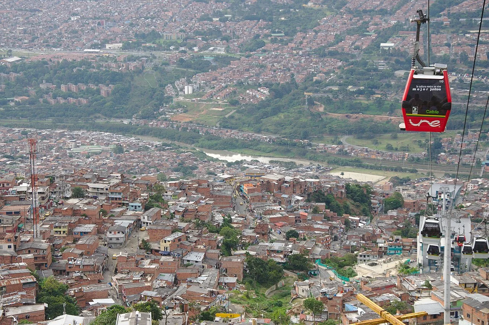
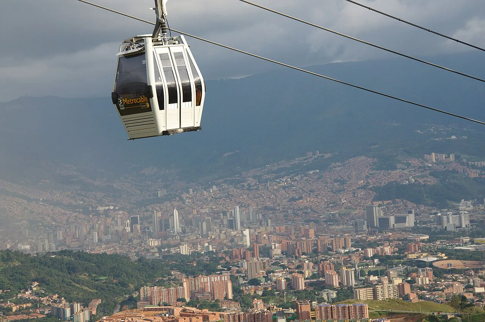

La imagen más repetible de un cable urbano es una cabina suspendida sobre las casas. La conexión que menos aparece en esa imagen está debajo: el trayecto entre una puerta y la estación. Un viaje puede ser rápido en el aire y difícil a pie. Evaluar el diseño del Metrocable exige mantener juntas esas dos escalas, incluso cuando una de ellas resulta mucho más fotogénica.
La línea K del Metro de Medellín inició su operación comercial el 7 de agosto de 2004. Conecta Acevedo con Santo Domingo mediante cuatro estaciones, según la información oficial del sistema. El dato que interesa aquí no es una competencia por el primer puesto entre ciudades. Es que el cable pasó a formar parte de una red de transporte: su utilidad depende también de cómo se conecta con otros recorridos. [1]
La fotografía de 2009 permite observar la relación entre cabinas, ladera y continuidad urbana. No explica cuánto tarda alguien en alcanzar la estación ni cómo cambia ese tiempo al cargar una compra o acompañar a otra persona. Esas preguntas requieren otros registros. La vista aérea muestra una condición territorial; no sustituye la experiencia del viaje completo y tampoco permite afirmar cómo funciona hoy.


Pensar el transporte como un servicio obliga a dibujar una secuencia. Primero hay que saber por dónde llegar y reconocer la entrada. Luego comprender las condiciones de acceso, localizar el recorrido correcto y resolver la conexión siguiente. Cada transición puede introducir una espera o una incertidumbre. La cabina es una parte del sistema; señalización, información y espacio peatonal también participan en su diseño.
El relato histórico del Metro describe desafíos tecnológicos del proyecto y distingue las pruebas de julio de 2004 del comienzo de la operación comercial en agosto. La diferencia recuerda que construir una infraestructura y habilitar un servicio son tareas relacionadas, pero no idénticas. Un sistema necesita comprobar funcionamiento, organizar operación y sostenerla después de la inauguración. El corte de cinta no es una medida suficiente de calidad. [2]
En una ladera, la distancia en planta cuenta una parte pequeña del esfuerzo. Pendientes, escalones y descansos pueden cambiar radicalmente la dificultad de dos trayectos que parecen similares en el mapa. Una auditoría peatonal tendría que registrar esas condiciones y distinguir perfiles de usuario. Aquí no se ha realizado: señalar qué habría que observar es más honesto que declarar accesibilidad a partir de la existencia de una estación.
La orientación también merece una evaluación concreta. Una persona que no conoce el sistema necesita encontrar información antes de comprometerse con un recorrido: dirección, conexiones y condiciones vigentes. Demasiadas señales pueden competir entre sí; demasiado pocas dejan la tarea en manos de la memoria o de preguntar. El diseño útil permite decidir en el lugar adecuado, con palabras y referencias consistentes entre el mapa, el acceso y la plataforma.


La presencia visual del cable cambia además la manera de representar Medellín. Desde arriba, la continuidad de las casas y la escala de la ladera adquieren una legibilidad que la calle no ofrece. Pero convertir esa vista en una imagen turística puede dejar fuera la rutina de quienes usan la red. Una publicación debería conservar la diferencia entre observar un paisaje, visitar un sector y depender de un servicio para desplazarse.
Tampoco corresponde atribuir al Metrocable, sin una evaluación específica, cambios en ingresos, seguridad o integración social. Las transformaciones urbanas involucran muchas decisiones simultáneas y experiencias desiguales. El interés del diseño no necesita una promesa total para sostenerse. Puede investigarse con preguntas acotadas: qué conexión añade, qué fricción reduce y qué dificultad permanece antes o después de abordar.
La consecuencia práctica es sencilla y exigente: ampliar el dibujo del proyecto hasta incluir sus bordes de uso. Si el análisis termina en la puerta de la estación, deja fuera una parte decisiva del servicio. Para comprender la contribución del cable a Medellín habría que caminar sus conexiones, recoger experiencias y contrastarlas con la información operativa. La cabina ofrece una imagen clara; el viaje completo necesita más de una perspectiva.
Fuentes.
- Metro de Medellín — línea K: información del sistema
- Metro de Medellín — Línea K, un proyecto que superó desafíos tecnológicos
Ensayo documental. Las fotografías son de 2009: no verifican infraestructura, operación ni condiciones de acceso actuales. No se atribuyen efectos sociales causales al sistema.
Fuentes consultadas el 15.11.2026. Análisis e interpretación: RUMMOR. Edición privada para revisión.